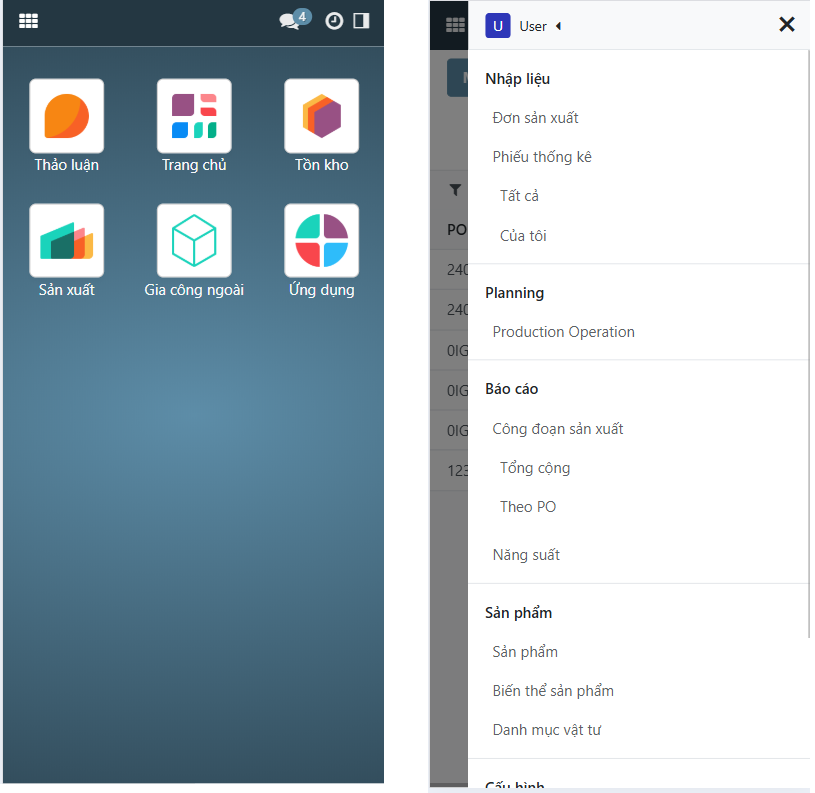

ERP Help
Giới thiệu
Sản xuất
Đơn sản xuất
Phiếu thống kê
Phiếu thống kê (Người quản lý)
Báo cáo
Giao diện mobile
Truy cập menu
Nhập phiếu thống kê
Xem báo cáo
ERP Help
Sản xuất
Giao diện mobile
Giao diện mobile
Truy cập menu

Nhập phiếu thống kê
Xem báo cáo
« Previous